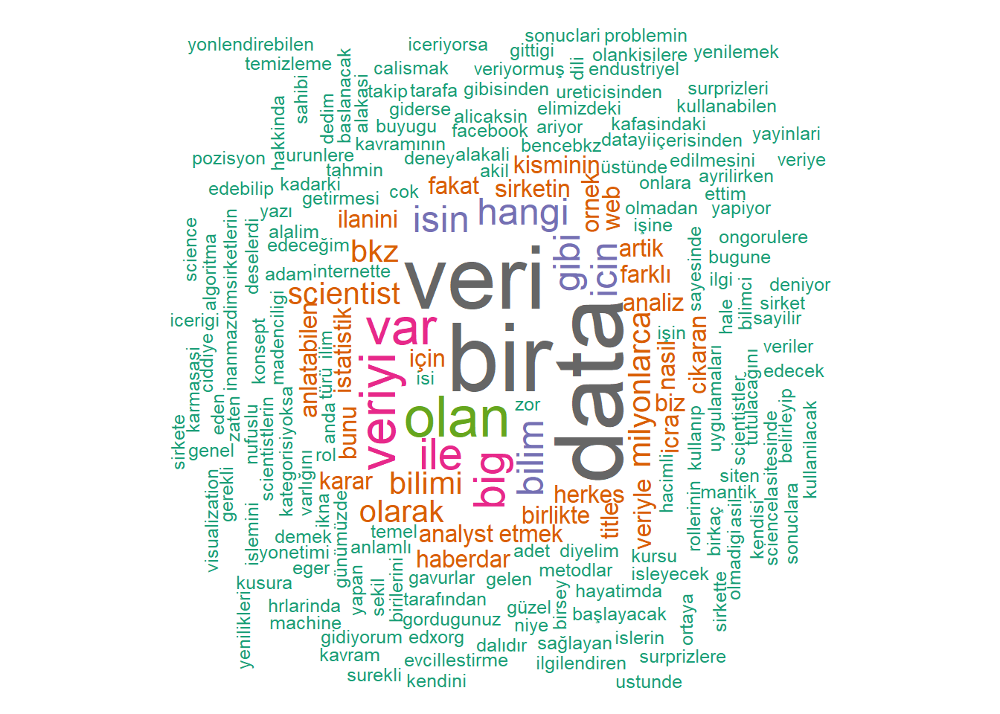

![]()
library(rvest)
library(dplyr)
library(wordcloud)
library(tm)Introduction
In this post, we will delve into harvesting a web page, Ekşi Sözlük. This process won’t include the automation of the process. Ekşi Sözlük is a reddit-like web site where users share their ideas on certain topics. Our target topic is “veri bilimi” (a.k.a. data science in English).
The R packages that we use in this post are as follows:
Processing
First things first; we start by introducing the webpage that we want to harvest.
html <- read_html("https://eksisozluk.com/veri-bilimi--3426406")Rvest allos us to collect any type of HTML tag from the current page. Let’s suppose we would like to collect all the links in a topic page:
links <- html %>% html_nodes("a.url") %>% html_attr("href")
links[1] "http://e-k.in/introduction-to-data-science/"
[2] "https://www.edx.org/course/introduction-big-data-apache-spark-uc-berkeleyx-cs100-1x#.VMK0q3v-t3U"Or maybe we would like to collect all the entries on the given page:
entries <- html %>% html_nodes(".content") %>%html_text()
#Let's see the first three entries:
head(entries, 3)[1] "\r\n internette milyonlarca veri var. bu milyonlarca veriyi işleyen milyonlarca uygulama var. işte bu uygulamalar sayesinde var olan veriyi kullanıp yeni veri uygulamaları yaratma işine veri bilimi denir.\r\n "
[2] "\r\n istatistik ile cok alakali bilim. (bkz: veri madenciligi)\r\n "
[3] "\r\n bana veri olmadan çalışan bir adet bilim türü gösterildiği anda varlığını ve özgünlüğünü kabul edeceğim ilim kategorisi.yoksa şununla yarışır bence:(bkz: deney bilimi) *" Now that you have all the entries in a page, it is easy to carry out a text analysis with it. Let’s simply create a word cloud:
#turn entries into corpus
entries<-Corpus(VectorSource(entries))
#apply several functions such as remove punctuation or numbers etc.
entries <- entries %>%
tm_map(removeNumbers) %>%
tm_map(removePunctuation) %>%
tm_map(stripWhitespace)
entries <- tm_map(entries, content_transformer(tolower))
#turn into a matrix
term_matrix <- as.matrix(TermDocumentMatrix(entries) )
#frequency table:
word_freqs <- sort(rowSums(term_matrix),decreasing=TRUE)
word_freqs <- data.frame(word=names(word_freqs),freq=word_freqs )
## word cloud:
wordcloud(words = word_freqs$word, freq = word_freqs$freq, min.freq = 1,
max.words=200, random.order=FALSE, rot.per=0.35,
colors=brewer.pal(8, "Dark2"))
Conclusion
This post is not complete, yet will be completed soon.